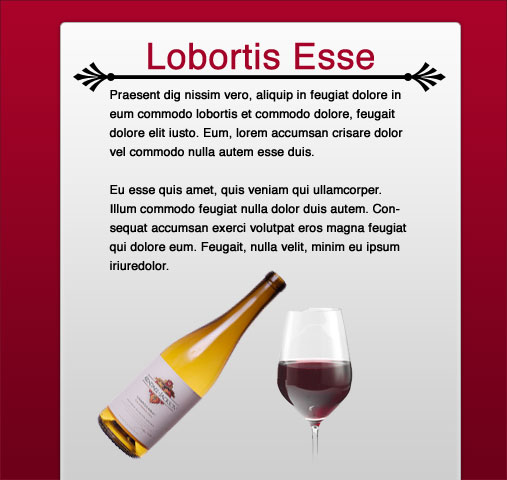

Red Wine Design Play
Tonight while sitting in front of the TV I decided to play around in Photoshop. The graphic design process has always been a mystery to me so I wanted to experiment and come up with new ideas. The result of about an hour worth of work is this:

The whole process was off-the-cuff with no real goal in mind but here are the steps I took to get to the end result.
First, I started with dummy text from LoremIpscream.com and created a headline and body text. I wanted to keep things simple so I used black Helvetica text against a pure white background. My focus was on some sort of divider between the headline and body text. I had the idea for more decorative, curly ornament ends for the divider but after looking through the built-in custom shapes I came across the palm leaves. After spacing them out I drew a 4 pixel tall black line to connect them.
text against a pure white background. My focus was on some sort of divider between the headline and body text. I had the idea for more decorative, curly ornament ends for the divider but after looking through the built-in custom shapes I came across the palm leaves. After spacing them out I drew a 4 pixel tall black line to connect them.
The title needed something else to make it stand out so I changed the color to a deep, moody red color. I took great care in lining up the elements in the composition and adjusting line heights, or leading as they call it in the graphic design world, to make the text more readable. Up until this point I was just playing with type but now I figured I could turn it into a basic web page layout.
I added a vertical rectangle with rounded corners that is oh so popular these days as a background. Thanks to the web 2.0 layer styles pack I could play around with different gradients to see their effect on the page. I settled for a white-light gray vertical gradient.
Things were starting to come together and to help set the mood even more I used a dark red gradient for the background. This also made the main content stick out by creating some depth. I also made sure both the background and foreground were lighter at the top and faded to a darker color at the bottom for consistency. At this point the title color and background color were slightly different so I used the eye dropper tool to grab a color from the background gradient in roughly the same spot as the title.
Finally I did a quick Google search for wine bottles and glasses to give my imaginary page some visuals. The deep red color reminded me of red wine so I figured it would be a good fit.
You can download my final PSD and have a poke around yourself. Even though it isn’t much to look at I had a lot of fun exploring design techniques and just playing around. Let me know what you think by leaving a comment.